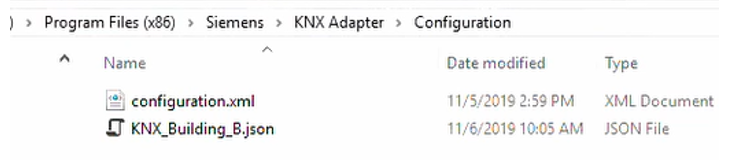

Save Configuration Changes to the JSON File
When you have made all the required changes, you can save the import settings defined here to the JSON file that will be used for the import into Desigo CC.
NOTE: If you instead want to discard the changes made to the current configuration, click Reset.
To save the configured import settings:
- Click Save.
- Click OK.
- A new import settings JSON file is created in the same directory as the original KNXProj source file, having the same name and extension .json. The previous JSON configuration file is backed up to a file with extension .json.orig to allow the reset of the configuration from the conversion tool.
- Copy the new JSON import settings file to the Configuration folder of the KNX Adapter.
NOTE: Delete any older configuration (JSON) files. Only one configuration file can exist in this folder. 
- To apply the new JSON import settings in Desigo CC, do the following:
a. In Windows, restart the KNX Adapter service.
b. In Desigo CC, perform a new discovery.